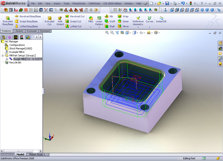
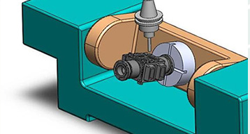
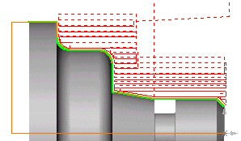
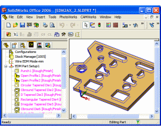

|
CAMWorks 1981 yýlýndan beri, SolidWorks ile birlikte dünyada ilk PC tabanlý (Windows tabanlý) çalýþan CAM programýdýr.
CAM programlarý içersinde dünyada ilk grafik (GUI) arayüzü ortaya çýkaran programdýr.
Dünya üzerinde 36.000 üzerinde lisanslý kullanýcýsý bulunmaktadýr.
CAMWorks, endüstride; kalýpçýlýk, seri imalat, medikal sektörü, elektronik ve
Otomotiv sektörlerinde yaygýn olarak tercih edilmektedir.
2.5 Eksen Ýþleme:
2½ Eksen Otomatik olarak kaba iþleme, finiþ iþleme, diþ
çekme, yüzey frezeleme, delik delme, baralama ve raybalama
iþlemlerini yapabilir.
Ýþleme prosedürleri, son teknoloji takým yollarýný ve güvenli
iþleme metotlarýný içerir.
Kesme döngüleri hýzlý ve hatasýz olmayý saðlar. Düz, açýlý,
köþe radyüslü, lolipop, diþ takýmlarý gibi birçok takým tipini
destekler.

2.5 Eksen Takým Yolu Atanmýþ Parça Örneði
3 Eksen Ýþleme:
3 eksen iþleme prosedürleri hýz, kesinlik ve etkili RAM
kullanýmý için geliþtirilmiþtir. Basit veya kompleks parçalar,
güvenli ve yüksek kaliteli takým yollarý sayesinde hýzlýca ve
kolayca iþlenebilir.
3 eksen iþleme özelliklerinin bazýlarý:
4/5 Eksen Pozisyonlama:
CAMWorks, ileri seviye
3+2 iþlemeleri desteklemesi sayesinde, parçanýn farklý
yüzeylerinde farklý operasyonlar gerçekleþtirilebilir. Ayrýca, CAMWorks bu tür çoklu pozisyonlamalar da otomatik takým
yollarý oluþturabilir. Çok eksenli frezeleme operasyonlarý
Döner tabla, Döner ve açýlý yatabilir(rotating and tilting
table) tabla, 5 eksen döner ve yatabilir kafa (rotating and
tilting head) ve yatay iþleme tezgah operasyonlarýný içerir.

4. ve 5. Eksen pozisyonlamasý Solidworks'te oluþturulan "0"
dereceli yüzey eksenidir. Her iki eksen ve 3 eksen
operasyonlarý bir parça üzerindeki farklý pozisyonlamalarda ya
da çoklu parçalarýn farklý yüzeylerinde kullanýlabilir.
Tanýmlanan kütükteki kalan talaþý hesaplayabilmesi sayesinde
takýmýn havadaki boþta gezmelerini azaltýr. Uygun ve doðru
pozisyonlamalar ile iþleme sürelerinde kazanç saðlar.
CAMWorks simülasyonu; bütün pozisyonlamarýný ve tezgâh
hareketlerini çarpma kontrolleri ile birlikte bilgisayar
ortamýnda kolayca izlenmesini saðlar.
Torna:
CAMWorks
programýnýn içinde Torna modülü de gelmektedir. Bu modülün
içinde otomatik kaba iþleme, hassas iþleme, yiv oluþturma, diþ
açma, delik geniþletme operasyonlarý yer almaktadýr.

Yazýlým,
3D yüzey bilgilerini kullanarak takým yollarýný hatasýz bir þekilde
tanýmlar.
Tel Erezyon:
Tel
erezyon modülünde kesilecek olan kontora ait bir kenar
seçmeniz yeterlidir.

Telin geçeceði
delikler hýzla ve basit olarak tanýmlanabilir.
Örneðin,
dairelerin merkezleri.
Ýrtibat:
...
Armada Yazýlým
www.armadayazilim.com |